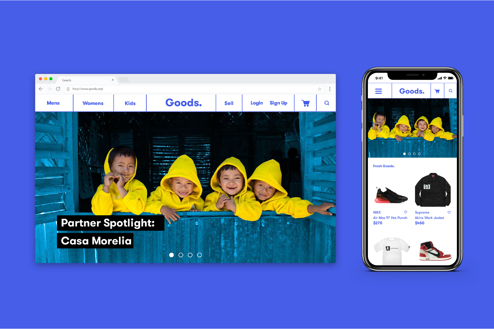
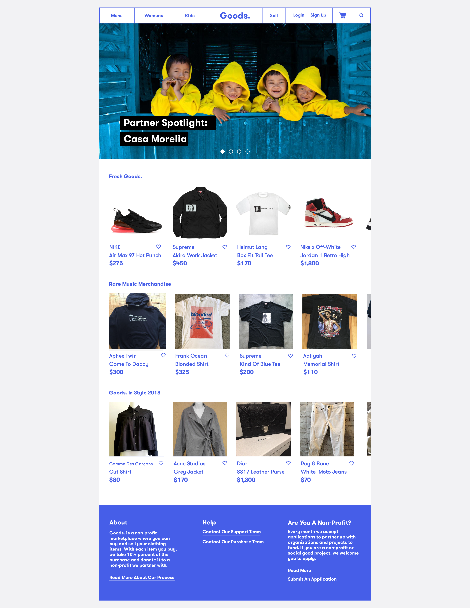
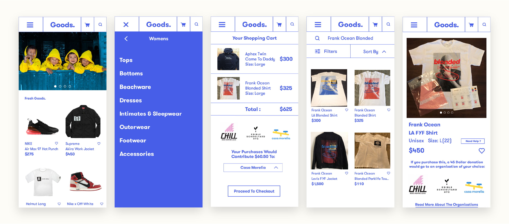

Goods. is a non-profit marketplace where people can buy and sell clothing items. With each item you buy, Goods. takes 10% percent of the purchase and donate it to a non-profit partner.
Goods. partners with different organizations every 2-3 months to maximize social impact.

Prototyping
After conducting research, I went through a couple rounds of wireframing and prototyping. Throughout each step of the process, changes were constantly made to the product.

The site features a dynamic navigation bar. The navigation bar contains features such as browsing, a quick search, and an option to post an item to sell. The bar also features a shopping cart where the user can select the organization they would like to donate a portion of their purchase to.
